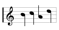

ing. Hoots fromm, we’re globing. Why hidest
thou hinder thy husband his name? Leda, Lada,
aflutter-afraida, so does your girdle grow!
Willed without witting, whorled without
aimed. Pappapassos, Mammamanet, warwhets-
wut and whowitswhy.1 But it’s tails for
toughs and titties for totties and come
buckets come-bats till deeleet.2
Dark ages clasp the daisy roots, Stop, if you
are a sally of the allies, hot off Minnowaurs
and naval actiums, picked engagements and
banks of rowers. Please stop if you’re a
B.C. minding missy, please do. But should
you prefer A.D. stepplease. And if you miss
with a venture it serves you girly well glad.
But, holy Janus, I was forgetting the Blitzen-
kopfs! Here, Hengegst and Horsesauce, take
your heads3 out of that taletub! And leave
your hinnyhennyhindyou! It’s haunted. The
chamber. Of errings. Whoan, tug, trace,
stirrup! It is distinctly understouttered that,
sense you threehandshighs put your twofoot-
large timepates in that dead wash of Lough
Murph and until such time pace one and the
same Messherrn the grinning statesmen, Brock
and Leon, have shunted the grumbling
coundedtouts, Starlin and Ser Artur Ghinis.
Foamous homely brew, bebattled by bottle,
gageure de guegerre.4 Bull igien bear and
then bearagain bulligan. Gringrin gringrin.
Staffs varsus herds and bucks vursus barks.
Pige pas.

Seidlitz powther
for slogan
plumpers.
Hoploits and
atthems.
panoptical
purview of
political
progress
and the
future pre-
sentation
of the past.
272